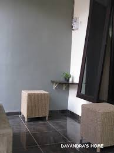

dengan ruas tatrasmu teras yang terbatas luasannya maka kami mencoba hunting kursi yang simple..namun setelah hunting beberapa kali kami belum mendapat bentuk serta harga yang cocok dihati...karena model yang kami inginkan tidak ready akhirnya kami coba design kursinya dan pesan ke pengrajin rotan andong yang ada di seputaran arjosari malang dengan harga yang relatif terjangkau....